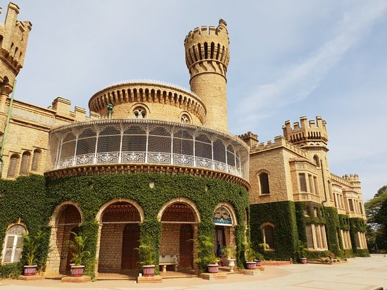

1. Bangalore Palace

About
An epitome of great architecture and beauty, The Majestic Bangalore Palace preserves in it the spice of old regal opulence. Currently the central attraction in Bangalore, the palace was built in the year 1878. Chamarajendra Wadiyar's British Guardians bought the original property in 1873 from the principal of Bangalore Central High School, Rev, J Garret, from his funds. The palace is extraordinarily vast and spread across 45,000 square feet. A mixture of Tudor and Scottish Gothic architecture have resulted into the grand palace that we see today.The wooden structure of the palace along with the beautiful carvings both inside and outside showcases the royal culture in different ways.
Address
Nandi Durga Rd, Jayamahal, Bengaluru, Karnataka
See More Images